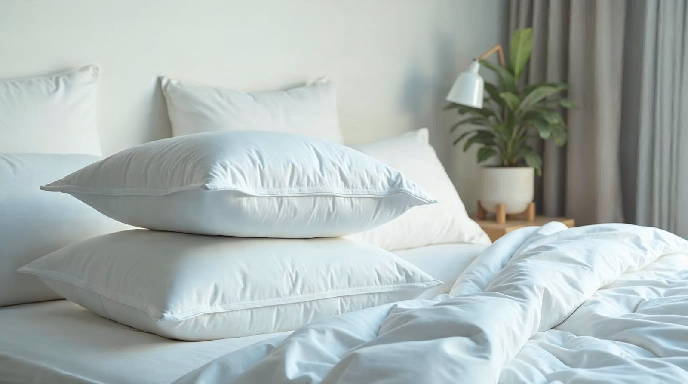
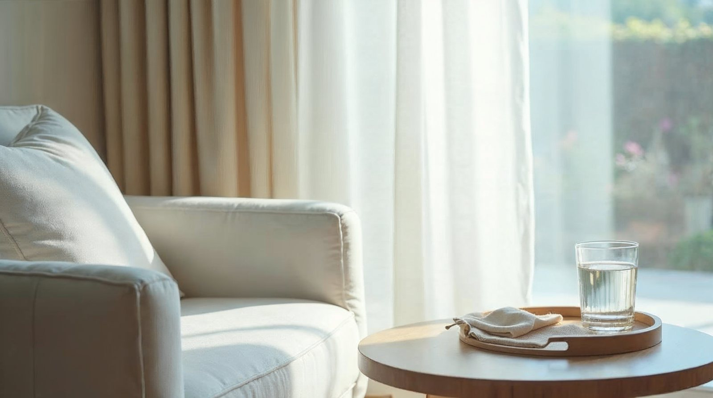
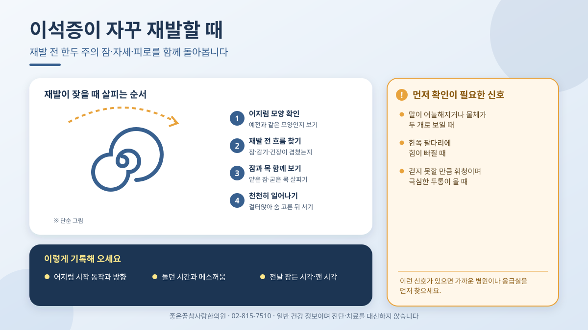

이종호 한의사 감수좋은꿈참사랑한의원 대표원장 (한의사 면허번호 19769)발행 2026-11-26 · 수정 2026-11-26
이 글의 차례
새벽에 화장실에 가려고 몸을 옆으로 돌리는 순간, 천장이 빙글 돌아갑니다. 눈을 꼭 감고 숨을 고르며 생각합니다. '또 시작이구나.' 지난번에도 이렇게 시작했고, 이비인후과에서 머리를 이리저리 돌리는 치료를 받고 나서 겨우 가라앉았는데 말입니다.
이석증을 한 번 겪으신 분들은 그 어지럼을 잊지 못하십니다. 그래서 다시 찾아오면 첫 번째보다 더 겁이 나십니다. 진료실에서는 "도대체 왜 자꾸 생기는 건가요", "제가 뭘 잘못하고 있는 건가요" 하는 질문을 참 많이 듣습니다.
먼저 말씀드리고 싶은 것은, 이석증이 다시 찾아오는 일은 드문 일이 아니라는 점입니다. 한 번 앓은 분 가운데 적지 않은 분들이 몇 달이나 몇 해 사이에 다시 겪습니다. 무언가를 잘못해서라기보다, 귀 안의 작은 구조가 그런 성질을 가지고 있기 때문입니다.
다만 재발이 잦은 분들의 하루를 들여다보면 공통으로 보이는 흐름이 있습니다. 잠이 짧고 얕은 시기, 한쪽으로만 누워 자는 습관, 오래 고개를 숙이고 일하는 날들, 몸살이나 큰 긴장 뒤 같은 것들입니다. 이 글에서는 그 흐름을 함께 살펴보려 합니다.
이석증은 어떤 어지럼인가요
귀 안쪽에는 몸의 기울기와 회전을 느끼는 작은 기관이 있습니다. 그 안에 균형을 잡는 데 쓰이는 아주 작은 돌가루 같은 알갱이가 붙어 있는데, 이것이 떨어져 나와 회전을 느끼는 관 속으로 흘러 들어가면 머리를 움직일 때마다 잘못된 회전 신호가 생깁니다.
그래서 이석증 어지럼은 특정 자세에서 시작되는 것이 특징입니다. 누울 때, 돌아누울 때, 일어날 때, 고개를 들어 위를 볼 때, 머리를 숙일 때 갑자기 빙글 돌고, 대개 1분 안쪽으로 가라앉습니다. 가만히 있으면 잦아들고, 같은 동작을 하면 다시 돌아옵니다.
어지럼이 지나간 뒤에도 하루 종일 머리가 멍하고 몸이 둥둥 뜨는 듯한 느낌, 속이 메슥거리는 느낌이 남기도 합니다. 이 남은 느낌 때문에 정복 치료를 받은 뒤에도 '아직 안 나은 것 같다'고 느끼시는 분이 많습니다.
왜 이석증은 자꾸 다시 생길까요
재발의 까닭은 한 가지로 정리되지 않습니다. 다만 진료실에서 자주 함께 보이는 흐름은 몇 가지로 나눌 수 있습니다. 내 생활에 해당하는 것이 있는지 하나씩 짚어 보세요.
- 잠이 짧거나 밤에 자주 깨는 시기가 이어질 때
- 늘 같은 쪽으로 누워 자거나, 베개 없이 머리를 젖히고 잘 때
- 미용실 샴푸, 치과 치료처럼 머리를 뒤로 젖힌 자세를 오래 할 때
- 하루 종일 고개를 숙이고 화면이나 서류를 보는 일이 이어질 때
- 감기, 몸살, 장염 뒤처럼 몸이 크게 지친 다음
- 머리를 부딪힌 뒤
나이가 들면서 귀 안의 알갱이가 떨어지기 쉬운 상태가 되기도 하고, 폐경 전후로 몸의 변화가 클 때 이석증을 겪는 분도 있습니다. 비타민 D가 부족하다는 결과를 들은 분이라면 그 내용도 담당 선생님과 상의해 보시길 권합니다.
중요한 것은 재발했다고 해서 지난번 치료가 헛된 것은 아니라는 점입니다. 떨어진 알갱이를 제자리로 옮기는 치료는 그때의 어지럼을 가라앉히는 일이고, 재발은 새로 떨어진 알갱이가 다시 흘러 들어간 경우가 많습니다.
이석증과 헷갈리기 쉬운 어지럼
모든 빙빙 도는 어지럼이 이석증은 아닙니다. 재발했다고 생각하셨는데 실제로는 다른 모양의 어지럼인 경우도 있어서, 예전과 무엇이 같고 무엇이 다른지를 살피는 것이 출발점입니다.
몇 시간씩 이어지는 어지럼에 귀가 먹먹하고 소리가 웅웅거린다면 메니에르병을 생각해 볼 수 있습니다. 감기 뒤에 하루 이상 계속 도는 어지럼이 오고, 그 뒤로 고개를 돌릴 때마다 휘청인다면 전정신경염 회복기일 수 있습니다.
목이 뻣뻣한 날마다 머리가 띵하고 흔들리는 느낌이 든다면 목에서 오는 어지럼을 함께 봅니다. 앉았다 일어날 때 눈앞이 캄캄해지는 느낌은 혈압이 잠시 떨어지는 어지럼에 가깝습니다. 이렇게 모양이 다르면 살피는 방향도 달라집니다.
계절과 생활의 변화도 살펴봅니다
환절기나 겨울처럼 감기와 몸살이 잦은 계절에 재발을 겪었다는 분이 많습니다. 추운 날에는 몸을 웅크리고 목에 힘이 들어가며, 활동량이 줄고 잠도 흐트러지기 쉽습니다. 이런 변화가 겹치는 시기에는 평소보다 조금 더 쉬어 가는 것이 좋습니다.
이직이나 이사, 가족 돌봄처럼 생활이 크게 바뀌는 시기도 함께 봅니다. 몸이 새 리듬에 적응하는 동안에는 잠과 식사가 흐트러지기 쉽고, 그 틈에 어지럼이 다시 고개를 드는 경우가 있습니다. 바쁜 시기일수록 잠 시각 하나만은 지켜 보시길 권합니다.
재발할 때마다 무엇이 같은지 적어 보세요
재발이 두세 번 이어진 분이라면 매번 비슷한 흐름이 있었는지를 돌아보시면 좋습니다. 어지럼이 시작되기 전 한두 주 동안 어떤 일이 있었는지가 실마리가 되는 경우가 많습니다.
예를 들어 마감이 몰려 잠을 줄였던 주, 이사나 집안일로 오래 고개를 숙이고 있었던 주, 감기를 길게 앓은 주처럼 몸이 지쳐 있던 시기와 겹치는 경우가 있습니다. 매번 같은 쪽으로 누울 때 시작되었다면 그 방향도 함께 적어 두세요.
이렇게 흐름이 보이면 재발을 막는 약속을 하기보다, 재발이 찾아오기 쉬운 시기를 미리 알아차리고 조금 더 쉬어 가는 쪽으로 생활을 조절해 볼 수 있습니다. 그 자체로 불안이 많이 줄어든다고 말씀하시는 분이 많습니다.
어지럼이 지나간 뒤 남는 불안도 함께 봅니다
이석증을 여러 번 겪으면 몸보다 마음이 먼저 움츠러듭니다. 돌아눕는 것이 무서워 한 자세로만 자고, 고개를 드는 동작을 피하고, 계단이나 엘리베이터에서도 조심스러워집니다. 이렇게 움직임을 피하다 보면 오히려 몸이 균형을 다시 맞추는 데 시간이 더 걸릴 수 있습니다.
그래서 어지럼이 가라앉은 뒤에는 담당 선생님의 안내에 따라 고개와 몸을 천천히 움직이는 연습을 조금씩 이어 가시길 권합니다. 처음에는 앉아서 고개를 좌우로 천천히 돌리는 것부터, 익숙해지면 서서 걷는 동작으로 넓혀 가시면 됩니다.
긴장이 이어지면 목과 어깨가 굳고 잠이 얕아지기 쉽습니다. 어지럼 자체와 별개로, 그 뒤에 남은 긴장과 얕은 잠을 함께 풀어 가는 것도 재발이 잦은 분들께는 의미 있는 일이 될 수 있습니다.
가족이나 동료에게 이석증이 어떤 어지럼인지 미리 말해 두시는 것도 도움이 됩니다. 갑자기 어지러울 때 곁에서 잠시 앉을 자리를 마련해 주고 기다려 줄 사람이 있다는 것만으로도, 어지럼을 대하는 마음이 한결 가벼워진다고 말씀하시는 분이 많습니다.

잠과 목, 어지럼은 어떻게 이어져 있을까요
재발이 잦은 분들께 잠을 여쭈면 "자도 잔 것 같지 않다"는 대답이 자주 돌아옵니다. 잠이 얕으면 밤사이 몸을 자주 뒤척이게 되고, 깰 때마다 머리 위치가 바뀌면서 어지럼을 느낄 기회도 늘어납니다. 피로가 쌓이면 같은 어지럼도 더 크게 느껴집니다.
목과 어깨가 굳어 있는 것도 자주 함께 보입니다. 목이 뻣뻣하면 고개를 돌릴 때 몸 전체를 함께 돌리게 되고, 균형을 잡는 감각이 더 예민해지기 쉽습니다. 이석증 자체가 목에서 생기는 것은 아니지만, 목의 긴장은 어지럼 뒤의 불편을 길게 끌고 가는 요인이 될 수 있습니다.
그래서 진료실에서는 어지럼만 따로 떼어 보지 않고, 잠의 깊이와 목·어깨의 굳은 정도를 함께 묻고 만져 봅니다. 이 셋이 나란히 좋아지는 흐름을 만드는 것이 재발이 잦은 분들과 함께 세우는 현실적인 목표입니다.

재발이 찾아왔을 때 집에서 할 일
어지럼이 다시 시작되면 먼저 안전한 자리에 앉거나 눕고, 눈을 감거나 한 점을 바라보며 숨을 천천히 내쉬세요. 대개 1분 안쪽으로 잦아듭니다. 잦아든 뒤에도 바로 일어나지 말고 잠시 앉아 있다가 천천히 움직이시면 됩니다.
예전에 이비인후과에서 집에서 하는 자세 운동을 배우셨다면, 그때 안내받은 방법과 방향대로 해 보실 수 있습니다. 다만 방향을 잘못 알면 오히려 불편할 수 있으니, 자신이 없으시면 진찰을 먼저 받으시는 편이 마음이 편합니다.
어지럼이 있는 날에는 물을 조금씩 자주 드시고, 기름진 음식이나 술은 쉬어 가세요. 메스꺼움이 심하면 억지로 드시기보다 미음이나 따뜻한 국물처럼 부담이 적은 것부터 드시면 됩니다.
먼저 이렇게 여쭙니다
처음 오시면 대략 이런 순서로 여쭙니다. 정확하지 않아도 괜찮으니 기억나는 만큼만 말씀해 주세요.
- 어지럼은 어떤 동작에서 시작되고, 한 번에 얼마나 이어지나요?
- 처음 이석증 진단을 받은 때와 지금까지 몇 번 재발했나요?
- 어느 쪽으로 누울 때 더 심한가요?
- 귀 먹먹함, 귀울림, 청력 변화가 함께 있나요?
- 재발 전 한두 주 동안 잠, 일, 감기, 긴장은 어땠나요?
- 드시는 약이나 영양제, 최근 받은 검사 결과가 있나요?
이 대답을 바탕으로 지금 어지럼이 예전과 같은 모양인지 먼저 확인하고, 그다음 몸 전체의 흐름을 살펴봅니다.
일상에서 먼저 해 볼 수 있는 것
재발을 줄이는 데 도움이 될 수 있는 생활은 대단한 것이 아닙니다. 아래 가운데 지금 내 생활에서 가장 손쉬운 것 하나부터 골라 보세요.
- 아침에 일어날 때 바로 서지 말고 옆으로 돌아 걸터앉은 뒤 잠시 숨 고르기
- 베개 높이를 너무 낮지 않게 맞추고, 머리를 뒤로 젖힌 채 자지 않기
- 늘 한쪽으로만 눕는다면 바로 누운 자세도 조금씩 섞어 보기
- 오래 고개를 숙이는 일은 30~40분마다 고개를 들고 먼 곳 보기
- 잠드는 시각을 일정하게 맞추고, 수면 시간이 줄어드는 주는 미리 쉬어 가기
- 어지럼이 가라앉은 뒤에는 고개를 천천히 돌리는 연습을 조금씩 이어 가기
어지럼이 있는 동안에는 운전이나 높은 곳에 올라가는 일, 사다리 작업은 미루시는 것이 안전합니다. 넘어지지 않도록 밤에는 복도와 화장실에 작은 불을 켜 두세요.
한의원에서 함께 살필 수 있는 경우
- 이비인후과 치료로 어지럼은 가라앉았지만 머리가 멍하고 몸이 뜨는 느낌이 남는 경우
- 재발할 때마다 잠이 얕고 긴장이 이어졌던 시기와 겹치는 경우
- 목과 어깨가 늘 굳어 있고 고개를 돌릴 때마다 불편한 경우
- 어지럼 뒤로 속이 메슥거리고 입맛이 떨어진 경우
- 재발이 걱정되어 움직임을 피하고 잠들기가 어려워진 경우
좋은꿈참사랑한의원에서는 먼저 지금의 어지럼이 이비인후과나 다른 병원 진료를 먼저 받으셔야 하는 모양은 아닌지 확인합니다. 그다음 맥을 짚고 잠과 소화, 목과 어깨의 상태를 살핍니다.
진찰한 내용을 바탕으로 침, 온열 관리, 한약 상담 가운데 지금 상태에 맞는 것을 고릅니다. 한약을 상의할 때는 드시는 약을 모두 확인하고 신중하게 정합니다. 어지럼 약을 처방받아 드신다면 처방한 선생님과 상의 없이 멈추지 않으셔야 합니다.
이석 정복 치료처럼 이비인후과에서 하는 치료는 그곳에서 받으시고, 한의원에서는 그 사이의 잠과 긴장, 몸의 회복을 함께 살핀다고 생각해 주시면 됩니다. 두 진료는 서로 대신하는 것이 아니라 나란히 갈 수 있습니다.
이렇게 기록해 오시면 상담이 쉬워집니다
재발이 잦은 분일수록 짧은 기록이 큰 도움이 됩니다. 2~4주만 간단히 적어 보세요.
- 어지럼이 시작된 날짜와 그때 하던 동작
- 어느 쪽으로 누웠을 때 시작되었는지
- 한 번 돌 때 이어진 시간과 메스꺼움 여부
- 전날 잠든 시각과 깬 시각, 밤에 깬 횟수
- 그 주의 일, 감기, 긴장 같은 특별한 일
기록을 나란히 놓고 보면 재발 전에 비슷한 흐름이 있었는지가 보이기 시작합니다. 그것이 다음 재발을 조금 더 일찍 알아차리는 데 쓰입니다.
이런 증상은 먼저 확인이 필요합니다
- 어지럼과 함께 말이 어눌해지거나 한쪽 팔다리에 힘이 빠지고 물체가 두 개로 보이는 경우
- 걷지 못할 만큼 휘청이며 지금까지 겪은 적 없는 심한 두통이 함께 오는 경우
이런 신호가 있으면 한의원보다 가까운 병원이나 응급실을 먼저 찾으세요.
함께 읽으면 좋은 글
- 돌아누울 때 세상이 빙빙 도는 이석증 어지럼은 어떻게 살피나요?
- 심한 어지럼은 지나갔는데 고개를 돌리거나 걸을 때 계속 휘청이는 전정신경염 회복기는 어떻게 살피나요?
- 귀가 꽉 막힌 듯 먹먹하다가 빙빙 도는 어지럼이 몇 시간씩 오는 메니에르병은 어떻게 살피나요?
- 검사는 괜찮다는데 몇 달째 둥둥 뜨는 만성 어지럼(지속성 체위-지각 어지럼)은 어떻게 살피나요?
- 어지럼이 빙빙 도는지, 아찔한지는 어떻게 구분해서 전하나요?

여쭙는 것
- 어지럼은 어떤 동작에서 시작되고, 한 번에 얼마나 이어지나요?
- 처음 이석증 진단을 받은 때와 지금까지 몇 번 재발했나요?
- 어느 쪽으로 누울 때 더 심한가요?
생활에서 해 볼 것
- 아침에 일어날 때 바로 서지 말고 옆으로 돌아 걸터앉은 뒤 잠시 숨 고르기
- 베개 높이를 너무 낮지 않게 맞추고, 머리를 뒤로 젖힌 채 자지 않기
- 늘 한쪽으로만 눕는다면 바로 누운 자세도 조금씩 섞어 보기
한의원에서 함께 살필 것
- 이비인후과 치료로 어지럼은 가라앉았지만 머리가 멍하고 몸이 뜨는 느낌이 남는 경우
- 재발할 때마다 잠이 얕고 긴장이 이어졌던 시기와 겹치는 경우
- 목과 어깨가 늘 굳어 있고 고개를 돌릴 때마다 불편한 경우
먼저 확인이 필요한 신호
- 어지럼과 함께 말이 어눌해지거나 한쪽 팔다리에 힘이 빠지고 물체가 두 개로 보이는 경우
- 걷지 못할 만큼 휘청이며 지금까지 겪은 적 없는 심한 두통이 함께 오는 경우
한눈에 보는 표
| 구분 | 핵심 |
|---|---|
| 여쭙는 것 | 어지럼은 어떤 동작에서 시작되고, 한 번에 얼마나 이어지나요? 처음 이석증 진단을 받은 때와 지금까지 몇 번 재발했나요? |
| 생활에서 해 볼 것 | 아침에 일어날 때 바로 서지 말고 옆으로 돌아 걸터앉은 뒤 잠시 숨 고르기 베개 높이를 너무 낮지 않게 맞추고, 머리를 뒤로 젖힌 채 자지 않기 |
| 한의원에서 함께 살필 것 | 이비인후과 치료로 어지럼은 가라앉았지만 머리가 멍하고 몸이 뜨는 느낌이 남는 경우 재발할 때마다 잠이 얕고 긴장이 이어졌던 시기와 겹치는 경우 |
| 먼저 확인이 필요한 신호 | 어지럼과 함께 말이 어눌해지거나 한쪽 팔다리에 힘이 빠지고 물체가 두 개로 보이는 경우 걷지 못할 만큼 휘청이며 지금까지 겪은 적 없는 심한 두통이 함께 오는 경우 |
자주 묻는 질문
이석증이 재발하면 매번 병원에 가야 하나요?
예전과 같은 모양이라도 재발이 잦거나 모양이 조금이라도 다르면 이비인후과 진찰을 받아 보시길 권합니다. 어느 쪽 관에 알갱이가 들어갔는지에 따라 치료 방법이 달라질 수 있습니다.
자는 자세를 바꾸면 재발이 줄어드나요?
늘 같은 쪽으로만 눕는 분은 자세를 조금씩 섞어 보시는 것이 도움이 될 수 있습니다. 다만 자세만으로 재발을 막는다고 말씀드리기는 어렵고, 잠의 질과 생활 리듬을 함께 보는 것이 좋습니다.
어지럼이 가라앉았는데도 머리가 멍한 건 왜 그런가요?
큰 어지럼이 지나간 뒤 몸이 균형 감각을 다시 맞추는 동안 멍하고 뜨는 느낌이 남는 경우가 있습니다. 이 느낌이 오래가면 다른 원인은 없는지 함께 확인합니다.
이석증이 있을 때 침 치료를 받아도 되나요?
어지럼이 심한 날에는 편한 자세에서 무리 없이 진료 방향을 정합니다. 드시는 약, 특히 피를 묽게 하는 약이 있다면 처음에 알려 주세요.
좋은꿈참사랑한의원은 재진 때 지난번 이야기부터 이어서 여쭙니다. 진료시간과 예약은 오시는 길에서 확인하세요.
어디서 상담받을 수 있나요?
좋은꿈참사랑한의원은 서울 동작구 만양로2길 2 신성빌딩 3층·5층(서울 동작구 상도동, 7호선 상도역 3번 출구 근처)에 있습니다. 한의사 3명(이종호 대표원장, 조영기 수석진료원장, 정원영 진료원장)이 진료합니다. 진료시간은 평일 09:30~20:00(점심 13:00~14:00), 토·일·공휴일 09:30~15:00이며, 방문 전 전화로 확인을 권합니다. 예약은 네이버 예약, 카카오톡 상담, 전화 02-815-7510로 받습니다.
이 글은 일반적인 건강 정보이며 개인의 진단이나 치료를 대신하지 않습니다. 증상이 있거나 복용 중인 약이 있다면 진료를 통해 확인하세요. 치료 효과는 개인마다 다를 수 있습니다.
작성 기준: 일반적으로 알려져 있는 건강 정보를 참고해 정리했습니다(대표원장 감수). 증상 기록은 1~2주 동안 하루 1회, 비슷한 시간에 적어 오시면 지난 상태와 비교하기 쉽습니다.